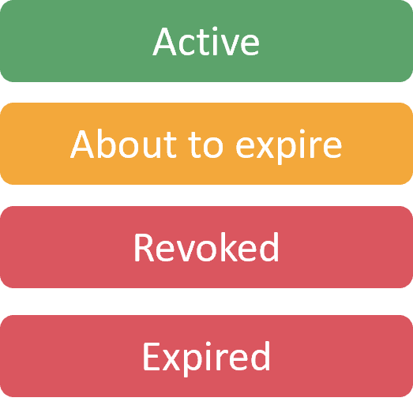

Architecture
Core Services

Lamassu has been designed to be modular and keep the core services as simple as possible encapsulating on each service a set of well defined responsibilities. The core services are those that bring the main functionalities of a modern PKI for industrial IoT use cases. The core services are:
CA
The Certificate Authority is the service in charge of issuing and managing the life cycle of the certificate. This service manages two different types of certificates:
- PKI Certificates: This kind of certificates are used by regular end entities such as the devices that connect to the PKI.
- Internal Certificates: In contrast with the previous type of certificates, these certificate authorities have a more restricted use. Their creation should be limited to the most trusted entities of the PKI. For instance, DMS certificates are issued by an internal CA named LAMASSU-DMS-MANAGER that is created on boot up. For the moment this is the only internal CA that is supported by Lamassu, but we are exploring the possibility of managing the certificates used by the services themselves.
On top of the regular functionalities that can be performed on this service such as creating new CAs, issuing or revoking certificates, this service is in charge of maintaining an accurate state of the managed entities (both CA certificates and regular certificates). In order to do so, a periodic task is scheduled once a day to check the status of validity of all certificates.
Warning
This feature does not perform well on deployments that have issued many certificates as it is performed on a sequential single threaded process. We are working on a solution to improve this.
There are 4 different status that a certificate can have:

The Active state indicates that a certificate is valid and can be trusted by end entities. The Expired state indicates that a certificate has reached its expiration date and is no longer valid and cannot be trusted anymore. The Revoked state is used by PKI admins when a security incident or unexpected situations arise and the certificate or CA certificate is no longer trusted. Recently a new state has been added to the CA service, the About to expire state. This state indicates, as the name suggests, that the certificate will expire shortly. The current threshold is set to 30 days and cannot be configured. This state doesn't affect the validity of the certificate, but it is used to notify the PKI admins that the certificate is about to expire and they should take action.
The CA service uses a relational database to store the issued certificates and basic information regarding the provisioned CAs. To configure the database connection, set the following environment variables:
| Environment Variable | Description |
|---|---|
| POSTGRES_HOSTNAME | Hostname or address to connect to a running postgres database |
| POSTGRES_PORT | Port for the postgres instance |
| POSTGRES_DATABASE | Database to use |
| POSTGRES_USERNAME | Username credentials |
| POSTGRES_PASSWORD | Password credentials |
This service has been redesigned to support multiple crypto engines backends. Originally the only supported engine was the one provided by Hashicorp Vault, but the new redesign implementation allows for a more flexible golang like approach, that is by using the crypto.Signer interface. Any new crypto engine can be added by implementing this interface.
To provision the CA service with a crypto engine set the following environment variable:
| Environment Variable | Description |
|---|---|
| ENGINE | pkcs11 | gopem | vault |
The current supported crypto engines are:
- pkcs11: To Use the HSM crypto engine, define the following environment variables before launching the CA service:
| Environment Variable | Description |
|---|---|
| PKCS11_DRIVER | Path to the PKCS11 driver file |
| PKCS11_LABEL | Label used by the token to be used |
| PKCS11_PIN | PIN code to login and operate the token |
- gopem - Files
| Environment Variable | Description |
|---|---|
| GOPEM_DATA | Directory where the generated private keys belonging to each CA are stored |
Although this new design is easier to maintain and operate, we are also keeping the previous implementation of the Hashicorp Vault that does not follow the new interface. The reason being that in order to provide a Vault implementation that follows the new interface, the Enterprise Vault license is required. This is a limitation that we are working on to overcome with the new crypto engine design. The new standard deployment deprecates the use of Vault as the main backend and instead a Software HSM known as SoftHSM v2.
- vault - Hashicorp Vault
| Environment Variable | Description |
|---|---|
| VAULT_ADDRESS | Protocol, hostname and port to a vault instance: https://vault:8200 |
| VAULT_ROLE_ID | Role ID used by the CA service to login to vault |
| VAULT_SECRET_ID | Secret ID used by the CA service to login to vault |
| VAULT_CA | Path to the CA certificate file for https connections |
| VAULT_UNSEAL_KEY_FILE | Path to the unseal vault keys |
| VAULT_PKI_CA_PATH | Prefix to use while creating new PKI vault secrets |
DMS Manager
The DMS Manager is the service in charge of managing the Registration Authority of the PKI. Instead of having a centralized Registration Authority, Lamassu uses a decentralized approach to be easily integrated by Device Manufacturing Systems. This way, each DMS has the authority to request the issuance of a certificate for a device being manufactured. Instead of relying on just one registration authority, Lamassu delegates the authorization of the issuance to the Local Registration Authority or LRA.
Each DMS is entitled to authorize the issuance of a certificate to a subset of CAs of the entire PKI defined by the administrator. Each DMS has a list of authorized CAs that may be used during the enrollment process. Once an enrollment process is initiated, the PKI will check that the provided DMS certificate is authorized to issue certificates for the requested CA. The authorization list can be updated to add newly created CAs or remove CAs that are no longer needed.
The DMS certificates that are used to authenticate the DMS are issued by an internal CA named LAMASSU-DMS-MANAGER. This CA is created by default when the PKI is deployed as stated earlier.
In Lamassu there are two different types of DMS Manual DMS and Cloud Hosted DMS. In the Manual DMS the communications between the Device and the DMS does not follow a standard and is done according to the needs/requirements of the device, instead, in the Cloud Hosted DMS the communication between the device and the DMS is done using the EST protocol. On the other hand, in Cloud Hosted DMS mode the device to communicate with the DMS and to be able to request a Certificate must have a Bootstrap certificate. By means of this certificate the DMS authorizes or rejects the device's request. In Manual DMS mode the authorization is done manually by the operator.

The DMS Manager service uses a relational database to store the list of authorised CAs and basic information regarding the provisioned DMS certificates. To configure the database connection, set the following environment variables:
| Environment Variable | Description |
|---|---|
| POSTGRES_HOSTNAME | Hostname or address to connect to a running postgres database |
| POSTGRES_PORT | Port for the postgres instance |
| POSTGRES_DATABASE | Database to use |
| POSTGRES_USERNAME | Username credentials |
| POSTGRES_PASSWORD | Password credentials |
- CA - The DMS service uses a Lamassu CA Client to update the status of the internal CA LAMASSU-DMS-MANAGER
| Environment Variable | Description |
|---|---|
| LAMASSU_CA_ADDRESS | Lamassu CA service name and port : ca:8087 |
| LAMASSU_CA_CERT_FILE | Path to the internal CA |
Device manager
At its core, the device manager is the main entry point for the enrollment process. It implements the EST protocol that must be used to obtain new certificates. On top of that, this service manages the registration of new devices and to keep a track of the device status. Similar to the CA service, the device manager also schedules a periodic task to check the status of the devices. This task is launched once a day to check the status of validity of all certificates associated by each device.
Warning
This feature does not perform well on deployments that have issued many certificates as it is performed on a sequential single threaded process. We are working on a solution to improve this.
There are 5 different status a device can have:

The Pending Provisioning state reflects that a device entity has been created but no certificate has been issued yet. The Fully Provisioned state indicates that a device has all the device slots with active certificates. The With warnings state indicates that a device has one or more slots with certificates that are either expired or have been revoked. The Requires Action state indicates that a device has one or more slots with certificates that are about to expire. The Decommissioned state indicates that a device has been decommissioned and no longer needs to be tracked by the PKI.
Each device can have certificates signed by different authorised CAs. Slots are used to link a particular device with a CA. Each Slot can store multiple certificates, but only one of them can be in an ACTIVE status.
The Device Manager service uses a relational database to store the information of the devices, certificates and slots, also, logs of devices and slots are created when an specific action is carried out, for example, in the creation. To configure the database connection, set the following environment variables:
| Environment Variable | Description |
|---|---|
| POSTGRES_HOSTNAME | Hostname or address to connect to a running postgres database |
| POSTGRES_PORT | Port for the postgres instance |
| POSTGRES_DATABASE | Database to use |
| POSTGRES_USERNAME | Username credentials |
| POSTGRES_PASSWORD | Password credentials |
- CA - The Device Manager service uses a Lamassu CA Client to update the status of the certificates associated to the devices
| Environment Variable | Description |
|---|---|
| LAMASSU_CA_ADDRESS | Lamassu CA service name and port: ca:8087 |
| LAMASSU_CA_CERT_FILE | Path to the internal CA |
- DMS - The Device Manager service uses a DMS Client to update the status of the certificates associated to the devices
| Environment Variable | Description |
|---|---|
| LAMASSU_DMS_MANAGER_ADDRESS | Lamassu DMS service name and port: dms-manager:8085 |
| LAMASSU_DMS_MANAGER_CERT_FILE | Path to the internal DMS |
- Other - Other configuration variables
| Environment Variable | Description |
|---|---|
| MINIMUM_REENROLL_DAYS | The minimum days that a certificate must be valid in order to reenroll |
Cloud Proxy
The Cloud Proxy allows integrating CAs created in cloud providers, it is in charge of syncronizing the data between cloud providers and the data of Lamassu. In particular, Lamassu incorporates AWS and Azure Cloud integration.
The Cloud Proxy service uses a relational database, to store the information of the Lamassu CAs and to assign a connector Id. The connector will be used to bind each Lamassu CA to their equivalent in the external cloud providers. To configure the database connection, set the following environment variables:
| Environment Variable | Description |
|---|---|
| POSTGRES_HOSTNAME | Hostname or address to connect to a running postgres database |
| POSTGRES_PORT | Port for the postgres instance |
| POSTGRES_DATABASE | Database to use |
| POSTGRES_USERNAME | Username credentials |
| POSTGRES_PASSWORD | Password credentials |
- Consul - Cloud connectors are dynamically registered, to have a record of what services exist, they self-register in consul. Cloud Proxy consumes consul to ask which service are registered.
| Environment Variable | Description |
|---|---|
| CONSUL_PROTOCOL | Protocol used to connect to consul instance : https |
| CONSUL_HOST | Hostname to a running consul instance |
| CONSUL_PORT | Port for the consul instance |
| CONSUL_CA | Path to the internal CA |
- CA - The Device Manager service uses a Lamassu CA Client to update the status of the certificates associated to the devices
| Environment Variable | Description |
|---|---|
| LAMASSU_CA_ADDRESS | Lamassu CA service name and port: lamassu-ca:8087 |
| LAMASSU_CA_CERT_FILE | Path to the internal CA |
Alerts
Alerts is the service in charge of sending mails. Users can be subscribed to particular events, such as, when a certificate is about to expire, and they will be notified via mail.
Events from all services above (Lamassu CA, DMS Manager and Device Manager) that create, revoke or modify the status of any certificate publish a message to RabbitMQ broker. The message sent to the "alerts" queue will be consumed by the Alerts service and will send a mail to all the users subscribed to that event.

Alerts service uses a relational database, to store the information of subscriptions and last executed events information. To configure the database connection, set the following environment variables:
| Environment Variable | Description |
|---|---|
| POSTGRES_HOSTNAME | Hostname or address to connect to a running postgres database |
| POSTGRES_PORT | Port for the postgres instance |
| POSTGRES_DATABASE | Database to use |
| POSTGRES_USERNAME | Username credentials |
| POSTGRES_PASSWORD | Password credentials |
- Configuration - Alerts service allows custom configuration to send SMTP mails, such as:
| Environment Variable | Description |
|---|---|
| SMTP_FROM | Email address of the sender of alerts generated by the service |
| SMTP_INSECURE | Boolean value to enable or disable secure SMTP session |
| SMTP_ENABLE_SSL | Boolean value to enable or disable SSL connection |
| SMTP_USERNAME | Username credentials |
| SMTP_PASSWORD | Password credentials |
| SMTP_HOST | Hostname or address to SMTP server: 25 |
| SMTP_PORT | Port for the SMTP instance |
- Templates - Alerts service allows custom configuration to send SMTP mails, such as:
| Environment Variable | Description |
|---|---|
| TEMPLATE_HTML | Template in HTML format to create mail format |
| TEMPLATE_JSON | Template in JSON format to rename queue names by readable text |
OCSP
OCSP (Online Certificate Status Protocol) service, allows to determine the validity status of an X.509 digital certificate.
OCSP service's response must be signed with a public private key, so the following variables must be specified.
| Environment Variable | Description |
|---|---|
| SIGNER_CERT | Lamassu CA service name and port: ca:8087 |
| SIGNER_KEY | Path to the internal CA |
- CA - OCSP service uses a Lamassu CA Client to update the status of the certificates associated to the devices
| Environment Variable | Description |
|---|---|
| LAMASSU_CA_ADDRESS | Lamassu CA service name and port: ca:8087 |
| LAMASSU_CA_CERT_FILE | Path to the internal CA |
Lamassu Compose
Lamassu Compose offers a SECURE deployment of the set of microservices required to manage an industrial PKI. The architecture presented on the following image reflects the interconnection of the different services mainly using the HTTP Protocol. The use of this deployment offers the following non functional requirements by leveraging the use of an API Gateway:
-
Centralized point of access: Each microservice listens on a different port which ends up being challenging for developers and users. With the use of the API Gateway, the user will always access the same host and port address. Port
80for HTTP connections and port443for HTTPS connections. -
Authentication: In order to invoke any endpoint, the API Gateway enforces each request to present a JWT. Upon receiving an HTTP request, the gateway validates the presented token against the authentication server.
-
Authorization: Another key aspect is enforcing an authorization schema. Lamassu has been configured in such way that only specific endpoints are accessible by non admin users.
-
Tracing: Logging the life of an HTTP request can be helpful during the debugging process of such complex application. The tracing aspect eases this process by injecting a unique identifier to each request that is then printed out by each microservice logs.
-
Mutual TLS authentication: As mentioned earlier the gateway acts as the traffic orchestrator knowing where each service is and redirecting the traffic accordingly. To prevent any unauthorized request as well as protecting the communications channel between the Gateway itself and the upstream service, the API Gateway initiates a mutual TLS connection to ensure such thing.